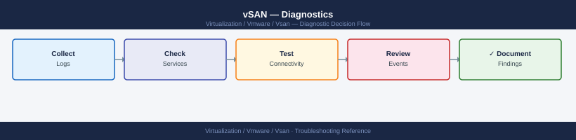

vSAN — Diagnostics¶

graph TD
A([vSAN Issue]) --> B{What type of problem?}
B -->|VM I/O errors or performance degraded| C[vSphere Client: Cluster → Monitor → vSAN → Skyline Health\nCheck failed health checks and recommended actions]
B -->|Object absent degraded or inaccessible| D[esxcli vsan debug object list on ESXi\nFilter: grep -v Healthy to find problem objects]
B -->|High latency or low throughput| E[vSphere Client: Monitor → vSAN → Performance\nCheck cluster read/write latency and congestion]
B -->|Network partition or split-brain| F[esxcli vsan debug network test\nvmkping -I vmk2 -d -s 8972 peer-vmk-ip]
B -->|Disk group failed or disk fault alarm| G[esxcli vsan storage list\nesxcli storage core device smart get -d naa\ngrep LSOM vmkernel.log]
B -->|Rebalancing or resync not completing| H[RVC: vsan.resync_dashboard .\nCheck slack space and bandwidth cap settings]
C --> I{Health check result?}
I -->|Failed health check with fix action| J[Follow recommended action in Skyline Health UI\nRe-run health check to confirm fix]
I -->|Health all green but symptom persists| K[Step 2: object-level diagnostics\nesxcli vsan debug object list]
D --> L[esxcli vsan debug object get -u uuid\nCheck component locations and health state]
E --> M[esxcli vsan perf get\nIdentify noisy VM: PowerCLI Get-Stat disk.write.average]
F --> N[esxcli vsan network list\nesxcli network nic stats get -n vmnic2]
G --> O[Check SMART: Reallocated Pending Uncorrectable sectors\ngrep naa.device vmkernel.log for errors]
H --> P[Check slack space: esxcli vsan storage list\nReview resync bandwidth: vSAN config]
J --> Q[Collect vCenter and ESXi support bundle\nOpen VMware SR]
K --> Q
L --> Q
M --> Q
N --> Q
O --> Q
P --> Q
Q --> R[vc-support.sh from VCSA + vm-support --vsan on each ESXi host\nAttach to VMware Support Request]
classDef dark fill:#1e3a5f,color:#fff
classDef action fill:#78350f,color:#fff
classDef escalate fill:#991b1b,color:#fff
class A,B,I dark
class C,D,E,F,G,H,J,K,L,M,N,O,P action
class Q,R escalateBefore you begin¶
- Access: vSphere Client with cluster admin privileges; SSH to ESXi hosts as root; SSH to VCSA as root
- Gather first: the specific symptom (object UUID from vSAN alarm, affected VM name, latency metric, health check name), the affected host or disk, and when the issue started
- Scope: confirm whether the issue affects one object, one disk group, one host, or the whole cluster — check vSAN health UI first before running CLI commands
- Performance Service: vSAN performance graphs require the vSAN Performance Service to be enabled on the cluster; without it, no historical data is available
Step 1 — Check vSAN Skyline Health¶
# From ESXi shell — run the built-in health check
esxcli vsan health cluster list
# Or run it from vSphere Client:
# vSphere Client → Cluster → Monitor → vSAN → Skyline Health → Retest
| Health category | What it checks |
|---|---|
| Data | Object policy compliance, rebuild capacity, resync status |
| Network | MTU, multicast, vSAN VMkernel reachability |
| Physical disk | SMART, capacity tier health, deduplication metadata |
| Cluster | Advanced configuration consistency, vCenter connectivity |
| Performance | Performance service status, stats DB disk usage |
Key CLI checks from ESXi shell:
# Cluster partition status
esxcli vsan cluster get
# Expected: Sub-Cluster Master UUID matches across all hosts
# All hosts in the vSAN cluster
esxcli vsan cluster unicastagent list
# vSAN network interfaces and tagged VMkernel adapters
esxcli vsan network list
# Expected: a VMkernel adapter with vSAN traffic type
Step 2 — Performance diagnostics¶
Baseline CLI checks¶
# SSH to ESXi host as root
# Real-time vSAN performance statistics
esxcli vsan perf get
# VMDK-level performance (per running virtual disk)
esxcli vsan debug vmdk list
# Physical disk I/O breakdown
esxcli vsan debug disk list
vSAN Performance from vCenter UI¶
vSphere Client → Cluster → Monitor → vSAN → Performance
| View | Key Metrics |
|---|---|
| Cluster | Read IOPS, Write IOPS, Read Throughput, Write Throughput, Read Latency, Write Latency |
| Host | Per-host breakdown of the above |
| Disk Group | Cache write buffer utilisation, capacity disk IOPS |
| VM | Per-VM front-end IOPS and latency (requires Performance Service) |
| Virtual Disk | Per-VMDK IOPS and latency |
Alert thresholds for investigation:
| Metric | Investigate at |
|---|---|
| Read latency (front-end) | > 10 ms sustained |
| Write latency (front-end) | > 20 ms sustained |
| Back-end read latency | > 30 ms (indicates disk issue, not just resync) |
| Congestion | > 0 for > 5 minutes |
| Cache write buffer (OSA) | > 95% sustained |
Collect performance statistics via CLI¶
# Real-time storage stats (refresh every 5 seconds for 60 seconds)
watch -n 5 "esxcli vsan storage stats get 2>&1 | head -40"
# Network latency between hosts (MTU-sized packets)
vmkping -I vmk2 -d -s 8972 <peer_vmk_ip> -c 100
# Check for NIC errors (drops, errors, retransmits)
esxcli network nic stats get -n vmnic2
Identify noisy VMs¶
# PowerCLI — top 10 VMs by write IOPS over last 1 hour
$cluster = Get-Cluster "VSAN-LON-01"
$end = Get-Date
$start = $end.AddHours(-1)
Get-VM -Location $cluster | ForEach-Object {
$stats = Get-Stat -Entity $_ -Stat "disk.write.average" `
-Start $start -Finish $end -IntervalMins 5 -ErrorAction SilentlyContinue
if ($stats) {
[PSCustomObject]@{
VM = $_.Name
AvgWriteKBps = [Math]::Round(($stats | Measure-Object -Property Value -Average).Average, 0)
}
}
} | Sort-Object AvgWriteKBps -Descending | Select -First 10
Step 3 — Object and component diagnostics¶
List all objects and health¶
# List all vSAN objects
esxcli vsan debug object list
# Objects that are not healthy
esxcli vsan debug object list | grep -v "Healthy"
# Filter by specific health states
esxcli vsan debug object list | grep -i "absent"
esxcli vsan debug object list | grep -i "degraded"
esxcli vsan debug object list | grep -i "inaccessible"
Object detail¶
# Detailed view of a specific object (get UUID from object list)
esxcli vsan debug object get -u <object-uuid>
This shows: - Object type (vmnamespace, vmswap, vdisk) - Component locations (which host/disk each component is on) - Component health state - Active policy and current compliance
Component detail¶
# List all components
esxcli vsan debug component list
# Components on a specific host
esxcli vsan debug component list | grep <host-uuid>
# Absent components
esxcli vsan debug component list | grep -i "absent"
Map object to VM¶
# Find which VM owns a specific vSAN object UUID
Connect-VIServer <vcenter>
$targetUUID = "<object-uuid>"
Get-VM | ForEach-Object {
$vm = $_
$vm.ExtensionData.Config.Hardware.Device |
Where-Object { $_ -is [VMware.Vim.VirtualDisk] } |
ForEach-Object {
if ($_.Backing.BackingObjectId -eq $targetUUID) {
Write-Host "VM: $($vm.Name), Disk: $($_.DeviceInfo.Label)"
}
}
}
Step 4 — Network diagnostics¶
End-to-end connectivity test¶
# vSAN built-in network test (tests all unicast agents)
esxcli vsan debug network test
# Manual ping to specific peer (replace with peer vSAN vmkernel IP)
vmkping -I vmk2 192.168.100.11
# Large packet test (MTU 9000)
vmkping -I vmk2 -d -s 8972 192.168.100.11
# Test to all cluster hosts (scripted)
PEERS="192.168.100.11 192.168.100.12 192.168.100.13"
for p in $PEERS; do
echo -n "Ping $p: "
vmkping -I vmk2 -d -s 8972 $p -c 10 | grep -E "loss|received"
done
Verify vSAN VMkernel configuration¶
# Confirm vmkernel adapter and vSAN tag
esxcli vsan network list
esxcli network ip interface tag get -i vmk2
# Expected output: VSAN tag present
# Verify IP and MTU
esxcli network ip interface list | grep -A10 vmk2
# Check routing — all vSAN peers must be on same subnet or route must exist
esxcli network ip route ipv4 list
NIC and switch diagnostics¶
# Check NIC link speed and duplex
esxcli network nic get -n vmnic2
# Check for NIC errors
esxcli network nic stats get -n vmnic2
# Check CDP/LLDP — what switch port is connected
esxcli network nic get -n vmnic2 | grep -i "CDP\|LLDP\|switch"
Expected NIC state: 25 GbE or 10 GbE, full duplex, zero errors. Any errors/discards on the NIC indicate physical layer issues (cable, SFP, switch port).
Step 5 — Disk and disk group diagnostics¶
Disk health¶
# All vSAN storage devices and their health
esxcli vsan storage list
# SMART data for a specific disk
esxcli storage core device smart get -d <naa>
# Check: Reallocated sectors, Pending sectors, Uncorrectable errors — any non-zero = failing drive
# Disk I/O errors in vmkernel log
grep "naa.<device-id>" /var/log/vmkernel.log | grep -i "err\|fail\|abort" | tail -20
Disk group status¶
# Disk group composition — cache and capacity disks
esxcli vsan storage list | grep -E "Is SSD|Disk Group UUID|naa\.|Display Name|Tier"
# Check for LSOM errors
grep -i "lsom\|diskgroup" /var/log/vmkernel.log | grep -i "err\|fail" | tail -30
Force a disk check (LSOM)¶
# Run a vSAN storage check (surface scan-equivalent for vSAN)
esxcli vsan storage check
# This runs the built-in disk consistency check — may take several minutes
# Output shows any inconsistencies found
Step 6 — Advanced diagnostics (vsish and RVC)¶
vsish diagnostics¶
vsish (vSphere Internal Shell) provides low-level kernel statistics. Use only when directed by VMware Support.
# Access vsish
vsish
# List vSAN disk information at kernel level
get /vmkModules/lsom/disks/
# Get specific disk stats
get /vmkModules/lsom/disks/<disk-uuid>/stats
# CMMDS internal state
get /reliability/cmmds/
# Exit vsish
exit
RVC diagnostic commands (legacy)¶
RVC (Ruby vSphere Console) is available on the VCSA appliance for older cluster diagnostics.
# SSH to VCSA, then launch RVC
rvc administrator@vsphere.local@vcenter.example.com
# Navigate to cluster
ls
cd localhost/Production/computers/VSAN-LON-01/
# Run full health check
vsan.health.health_check .
# Disk stats per host
vsan.disks_stats .
# Object compliance report
vsan.obj_status_report .
# Resync dashboard
vsan.resync_dashboard . --refresh-rate 30
# Network diagnostics
vsan.test_network_perf .
RVC is primarily useful for vSAN 6.x clusters. Modern clusters (7.x/8.x) should use esxcli vsan commands and the Skyline Health UI.
Step 7 — Collect support bundle¶
Collect a support bundle before opening a VMware support case. The bundle includes logs from all cluster hosts and vCenter.
From vCenter UI¶
vSphere Client → Menu → Administration → Export System Logs
Select: - vCenter Server logs - All ESXi hosts in the vSAN cluster - Include vSAN logs (checkbox in the export dialog)
This generates a .zip file with all logs consolidated.
From VCSA shell¶
# Generate support bundle from VCSA (SSH to VCSA as root)
vc-support.sh -l /tmp/vc-support-bundle
# This generates a .tgz in /tmp — download via SCP or SFTP
From ESXi shell (individual host)¶
# Collect ESXi support bundle with vSAN logs
vm-support --log-level 6 --vsan
# Output written to /var/tmp/vmsupport/
# Transfer to support-accessible location
scp /var/tmp/vmsupport/*.tgz user@jumphost:/tmp/
vSAN-specific log collection¶
# Collect vSAN traces (more detailed than standard support bundle)
esxcli vsan trace get -t 300 -d /tmp/vsantrace
# Collect CMMDS state dump
python /usr/lib/vmware/vsan/bin/cmmds-tool.py enumerate -d /tmp/cmmds-dump.json
Log locations¶
| Log / Source | Path / Command | What to look for |
|---|---|---|
| vSAN health | vSphere Client → Cluster → Monitor → vSAN → Skyline Health | Failed health checks with recommended actions |
| vmkernel.log | /var/log/vmkernel.log on ESXi |
LSOM errors, disk faults, network partition events |
| vsan_health.log | /var/log/vmware/vsan-health/vsan-health.log on VCSA |
Health service internal errors |
| vSAN performance | vSphere Client → Monitor → vSAN → Performance | Latency, IOPS, throughput graphs |
| cmmds dump | cmmds-tool.py enumerate -d /tmp/dump.json on ESXi |
Object/component UUID mapping and state |
| vSAN trace | esxcli vsan trace get on ESXi |
Detailed I/O path events for VMware Support |
| Support bundle | vc-support.sh on VCSA + vm-support --vsan on ESXi |
All-in-one — required for VMware SR |
See also¶
Verify resolution¶
- vSAN Skyline Health shows all checks green: vSphere Client → Cluster → Monitor → vSAN → Skyline Health
esxcli vsan debug object list | grep -v Healthyreturns no output — all objects healthyvmkping -I vmk2 -d -s 8972 <peer-vmk-ip>shows 0% packet loss to all cluster peers- vSAN Performance graphs show latency below thresholds (read < 10 ms, write < 20 ms)
- No new LSOM or disk errors:
grep -i "lsom\|fail" /var/log/vmkernel.log | tail -10 esxcli vsan cluster getshows consistent Sub-Cluster Master UUID across all hosts